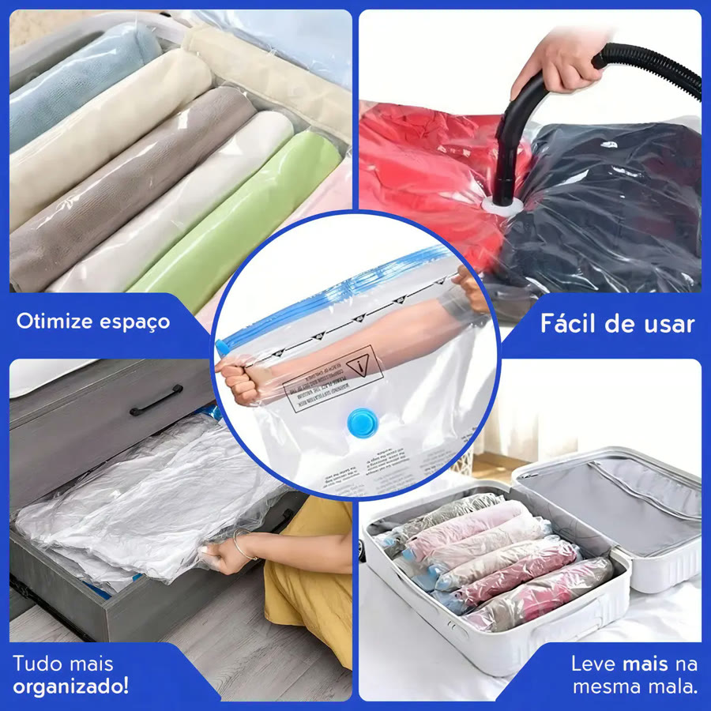
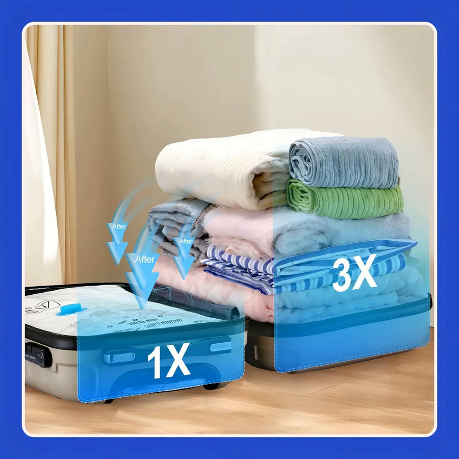
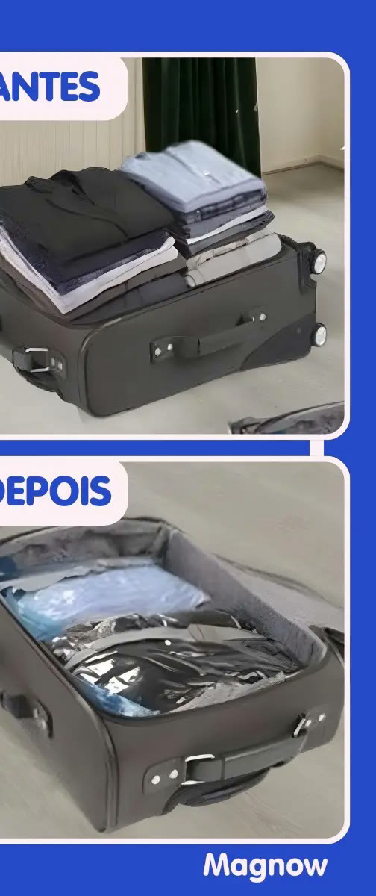

Achado nº 2
Kit 4 sacos a vácuo para roupas com bomba manual




O que diz a página oficial do produto
- Kit com 4 sacos a vácuo tamanho G, de 70 cm x 110 cm
- Acompanha uma bomba manual; segundo o anúncio, também dá para tirar o ar com aspirador de pó
- Os sacos fecham com zíper e têm válvula para tirar o ar
- São reutilizáveis
- Segundo o anúncio, servem para roupas, cobertores, edredons e toalhas
- Segundo o anúncio, economizam até 70% de espaço
- Marca Magnow
- No Mercado Livre, tem nota 4,8 com mais de 18 mil avaliações e mais de 10 mil vendidos
Link de afiliado: se você comprar por ele, a Achadaria pode receber uma comissão, sem custo extra para você. Preço, estoque e entrega são da loja e podem mudar; confira lá antes de comprar.